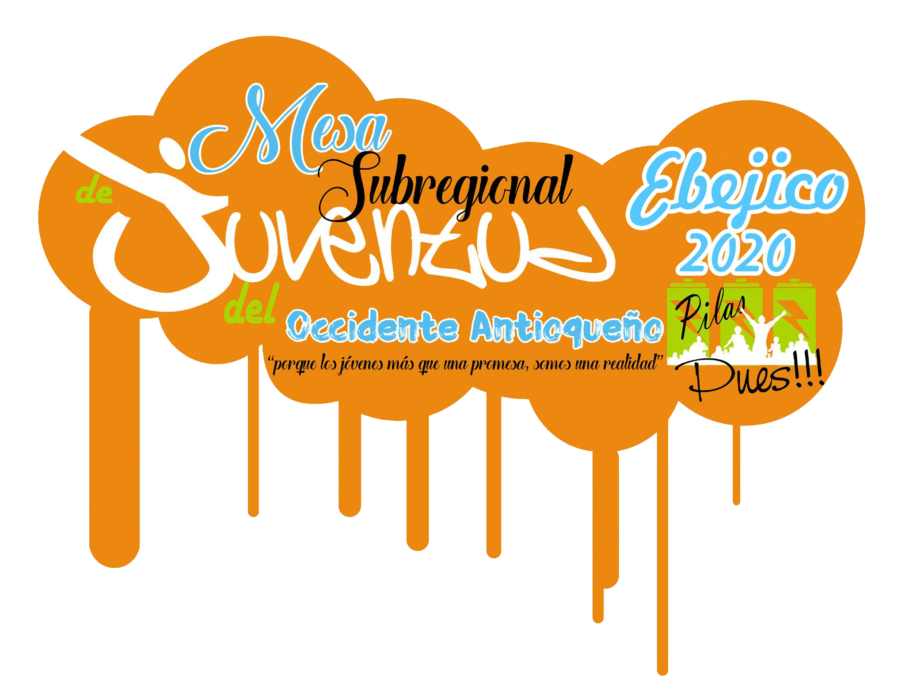
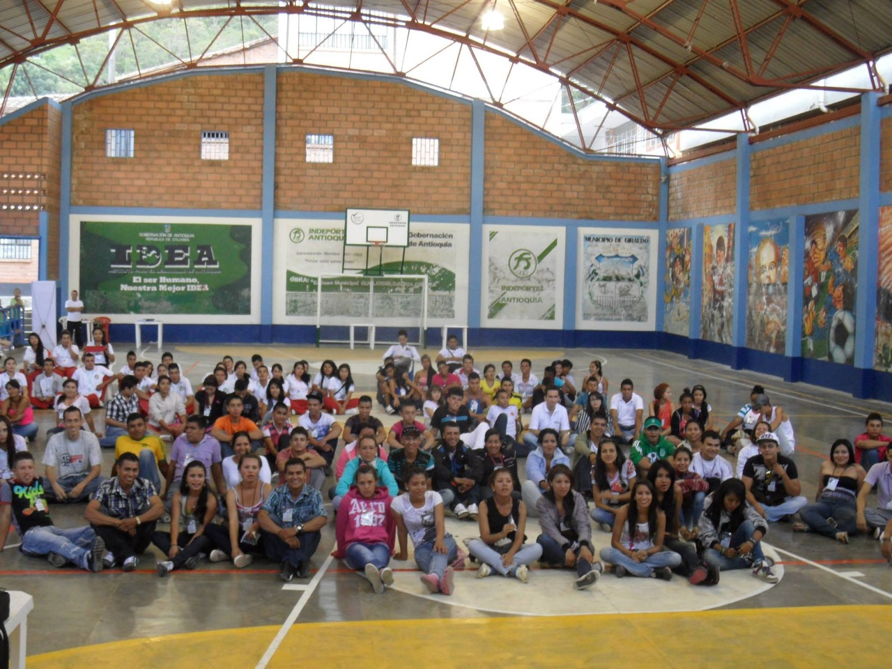
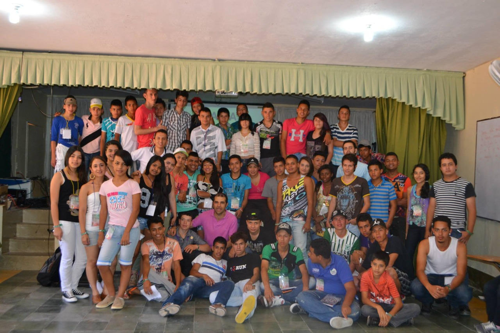
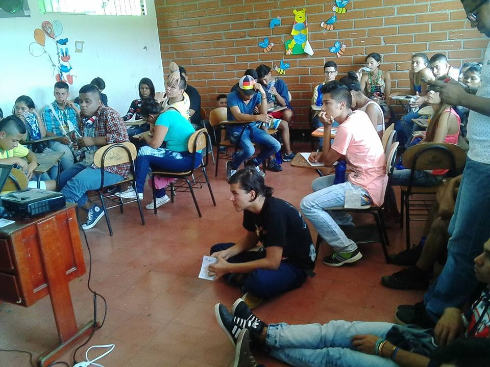
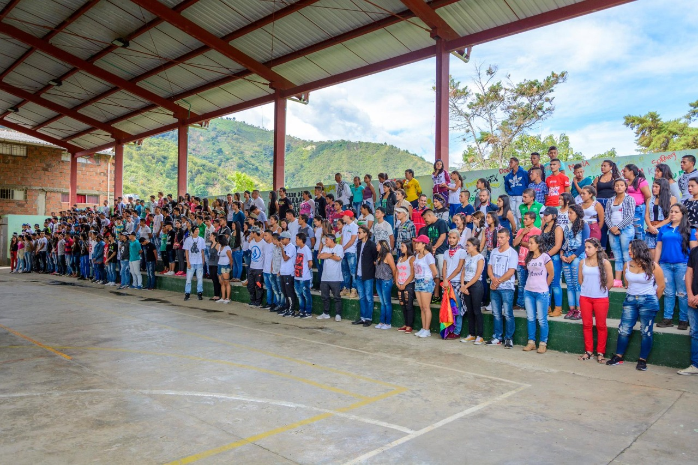
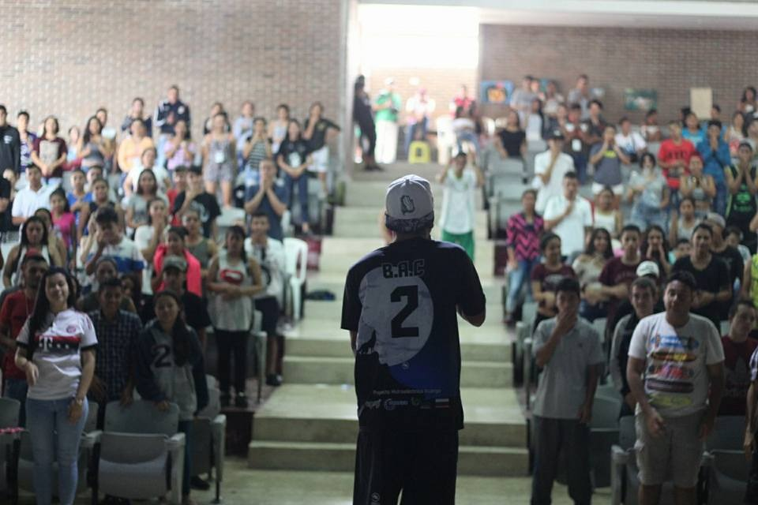
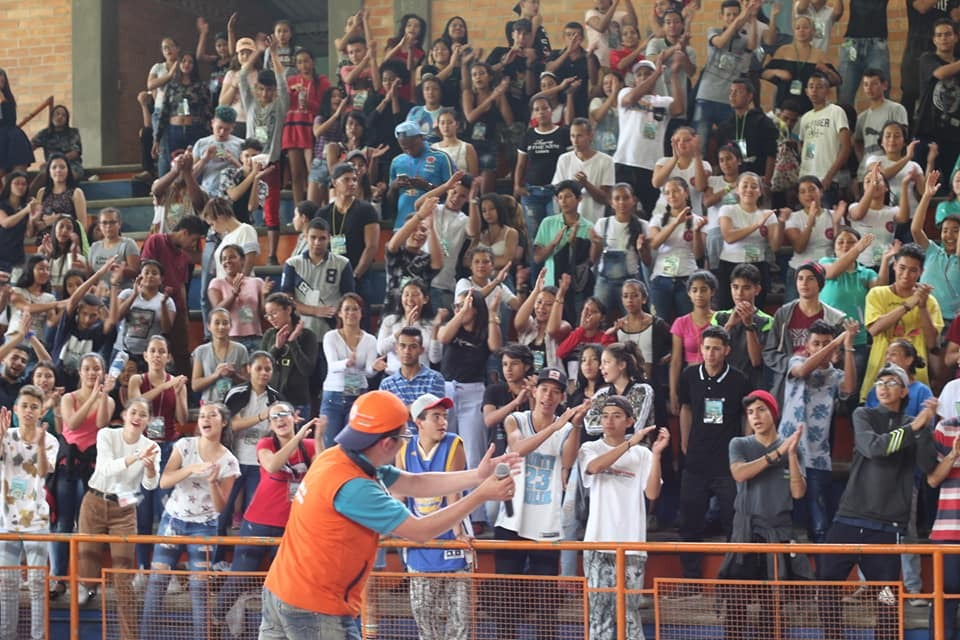

La MESA REGIONAL DE JUVENTUD DEL OCCIDENTE ANTIOQUEÑO es el evento más importante que tienen las y los jóvenes en la Región, ya que es el escenario en donde pueden dar a conocer sus procesos y de igual forma intercambiar conocimientos.

Linea del Tiempo

2013
El municipio sede fue Giraldo, en donde aproximadamente 200 jóvenes recibieron formación en Medio ambiente, cultura, políticas públicas y normatividad, innovación ciencia y tecnología.

2014
San Jerónimo fue el encargado de recibir a 250 jóvenes de múltiples municipios del occidente, recibiendo formación en formulación y gestión de proyectos, emprendimiento, participación democrática, oratoria argumentación y debate.

2016
Frontino se convirtió en la sede de nuestro octavo encuentro regional en donde se contó con la participación de 260 jóvenes.

2017
Caicedo recibe de nuevo a nuestros Jóvenes líderes en el IX encuentro, teniendo la participación de 310 Jóvenes de los Municipio de; Uramita, Liborina, Buriticá, Caicedo, Olaya, Santa Fe de Antioquia, Frontino, Cañasgordas, Giraldo, San Jerónimo, Sabanalarga y Ciudad Bolívar, además nos acompañó el colectivo Cultural de la Comuna 12 de la ciudad de Medellín Como Invitado.

2018
Uranita se posesiono como un gran Referente de cultura Juvenil, siendo la sede para este año con una gran parrilla académica y Cultural en donde se demostró una vez más que las y los jóvenes del Occidente Antioqueño, tiene las Capacidades y talentos Suficiente para generar estrategias de desarrollo en cada uno de sus Municipios.

2019
Cañasgordas fue la sede de nuestro encuentro con grandes aliados como COLANTA, Continental Gold, y la Gobernación de Antioquia.